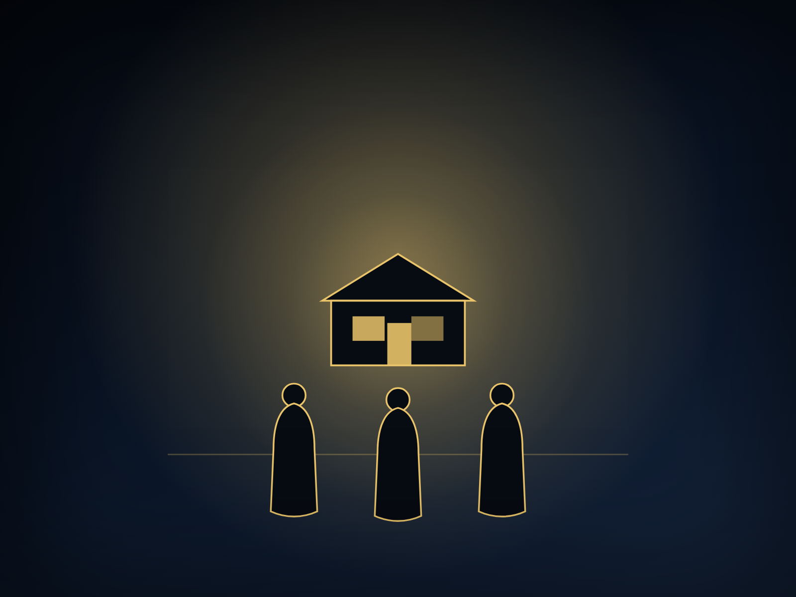
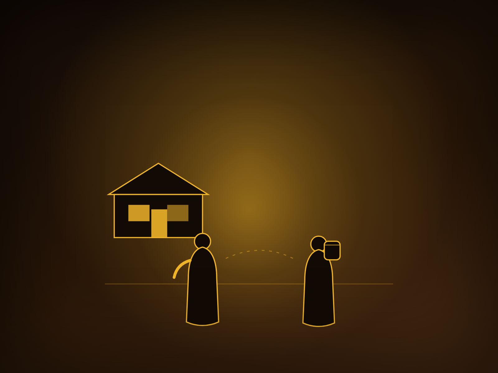
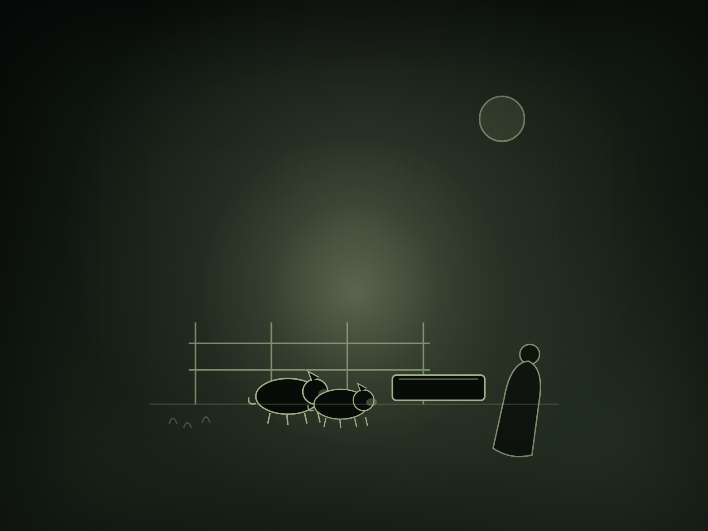
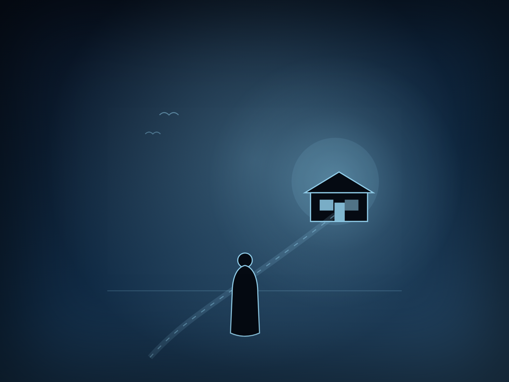
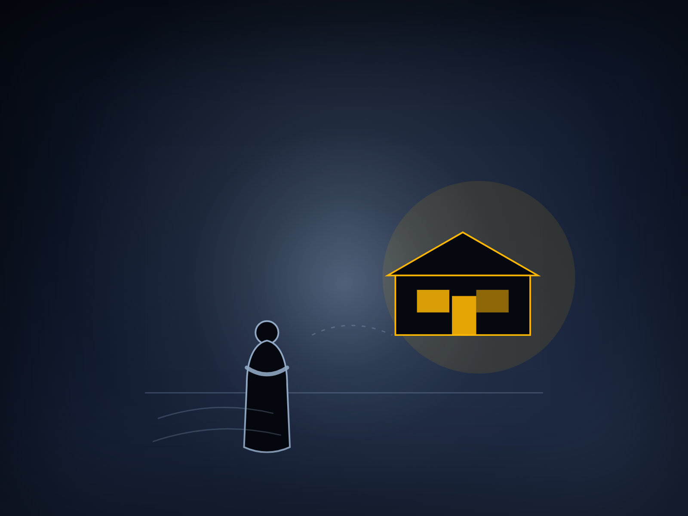
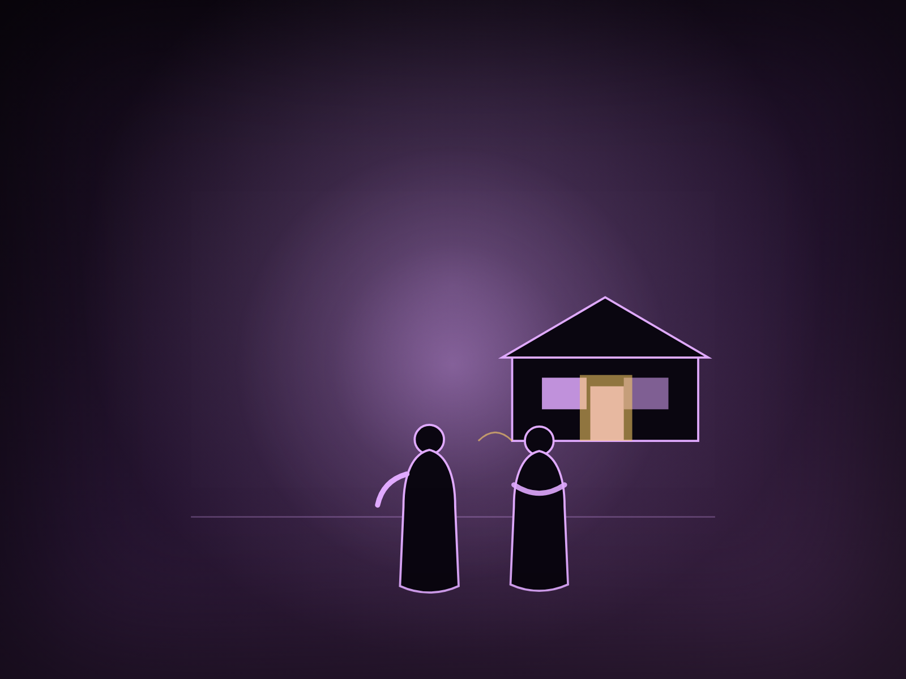

The Father
Watches the road. Runs when others would wait.
An illustrated retelling of Luke 15:11–32
Two sons. One father. A love that runs down the road.
Scroll to begin
A story Jesus told
One son took his inheritance and left. The other stayed home and kept score. Both were lost in different countries. Both were loved by the same father.
Meet the family

Watches the road. Runs when others would wait.
Takes his inheritance and leaves. Comes home with nothing.
Stays, serves, and keeps score. Learns that grace is not fair.

01 · Luke 15:11–12
The house was full of light, and the younger son had already packed his bag. He came to his father and asked for his share of the estate — not later, not after the old man's death, but now.
The father listened. Then he divided his property between them. There was no shouting, no locked door. The boy was free to go, and the father let him.
02 · Luke 15:13–14
He gathered everything and set off for a distant country. There the money went quickly — parties, friends, music late into the night.
When the last coin was spent, the friends went too. Then a famine came, and the boy discovered what it meant to be alone.

03 · Luke 15:15–16
He hired himself out to a citizen of that country, who sent him to feed pigs. For a Jewish boy, this was the bottom of the barrel: unclean animals, foreign soil, no dignity left.
He was so hungry he longed to fill his stomach with the pods the pigs were eating. And no one gave him anything.

04 · Luke 15:17–20
Then something turned. He remembered the hired servants in his father's house — men who had bread to spare — while he was starving.
“I will go back,” he said. “I will tell my father the truth: I have sinned. I am no longer worthy to be called his son. Make me one of your servants.”
So he got up and began the long walk home.
05 · Luke 15:20
But while he was still a long way off, his father saw him. The old man had been watching the road. He was filled with compassion. He ran — lifted his robe and ran — threw his arms around the boy and kissed him.
In that culture, a respected father did not run. This one did.
06 · Luke 15:21–24
The son began his speech: “Father, I have sinned against heaven and against you. I am no longer worthy—”
The father interrupted him with grace.
“Quick! Bring the best robe. Put a ring on his finger and sandals on his feet. Kill the fattened calf. Let's have a feast. This son of mine was dead and is alive again; he was lost and is found.”
So the music started again.

07 · Luke 15:25–30
Meanwhile, the older son was in the field. Coming home, he heard music and dancing. He stopped a servant. “What's going on?”
“Your brother has come,” the servant said, “and your father has killed the fattened calf because he has him back safe and sound.”
The older brother was angry and refused to go in.
“All these years I've been slaving for you,” he said, “and never disobeyed your orders. Yet you never gave me even a young goat so I could celebrate with my friends. But when this son of yours comes home, you kill the fattened calf for him!”

08 · Luke 15:31–32
The father went out to him.
“My son,” he said, “you are always with me, and everything I have is yours. But we had to celebrate and be glad, because this brother of yours was dead and is alive again; he was lost and is found.”
The music was still playing. The door was still open.
09 · Luke 15:11–32
The story ends without telling us whether the older brother went in. That is the question it leaves with us.
Because there were two lost sons — one in a far country, one at home — and one father whose love ran down the road to meet them both.
Luke 15:11–32
Grace runs to meet us —
both the son who left, and the son who stayed.
An illustrated retelling of the Parable of the Lost Son. Images generated with fal · GPT Image 2.5.